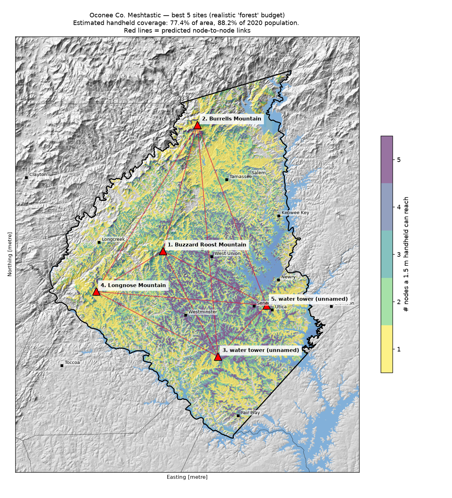
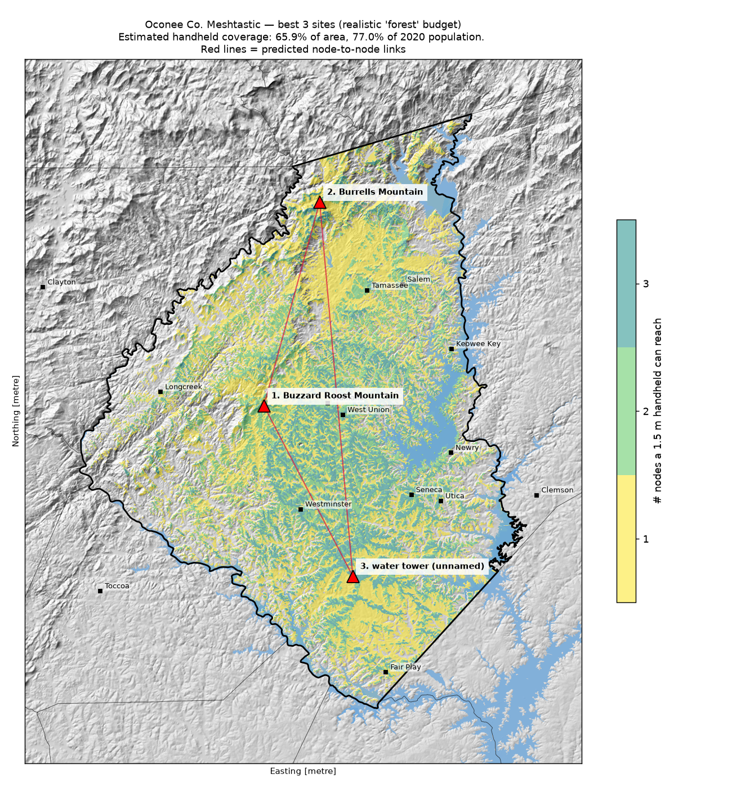
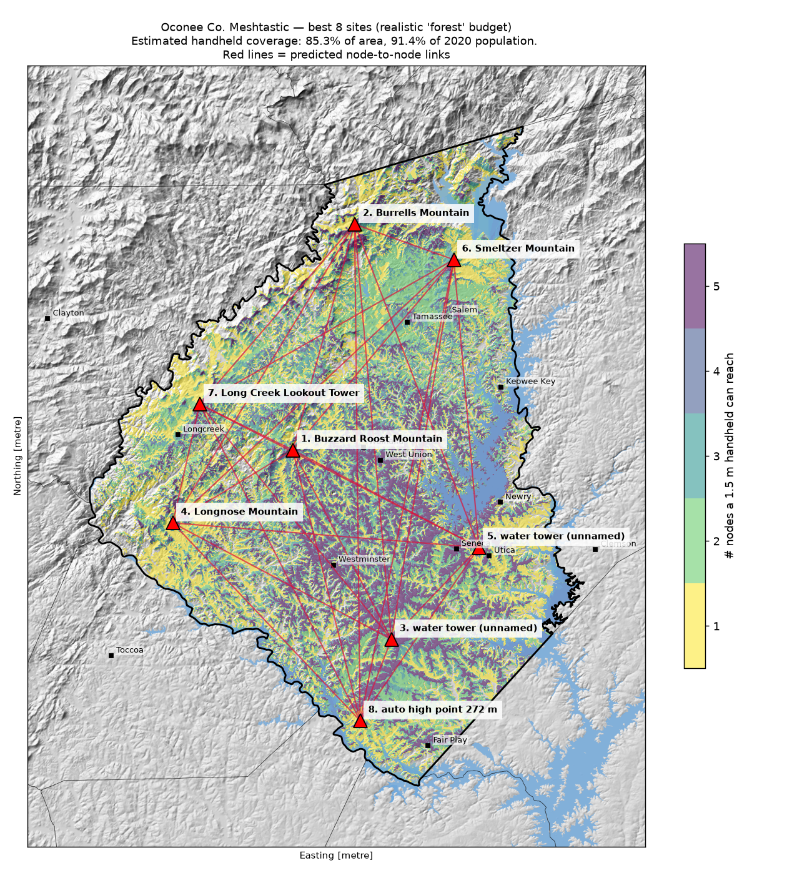
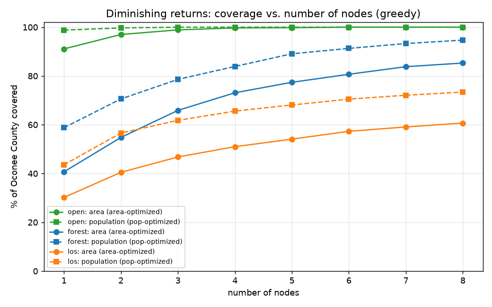
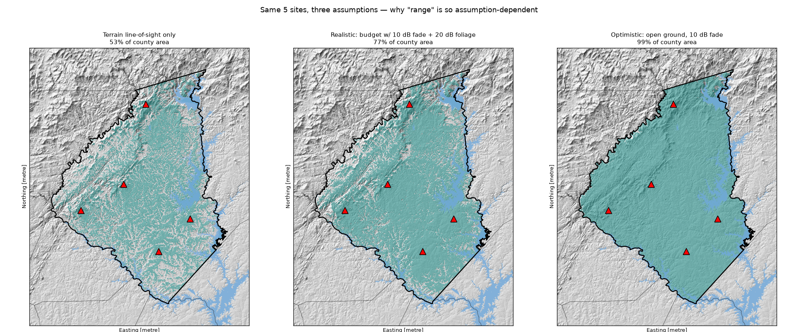
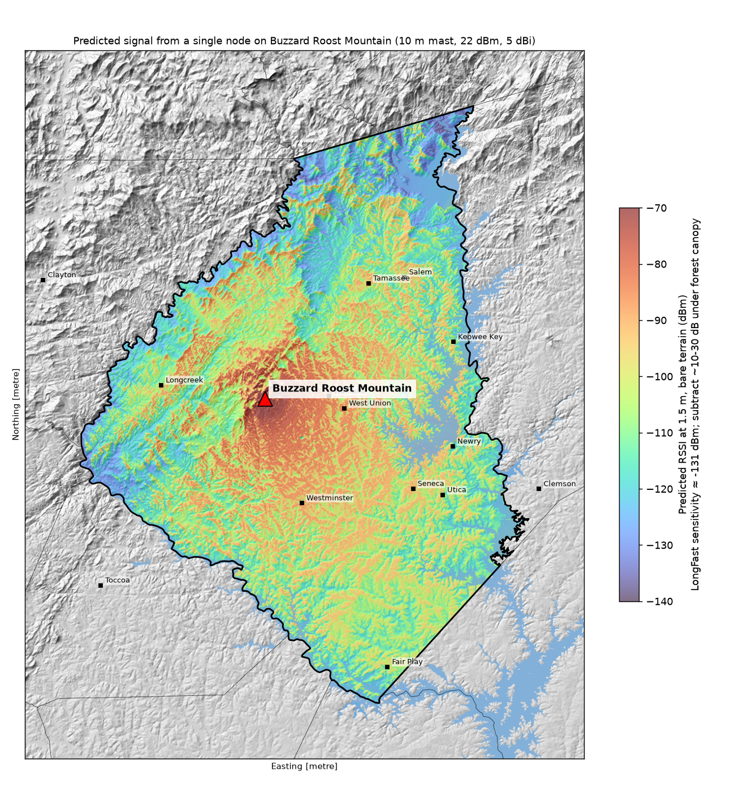
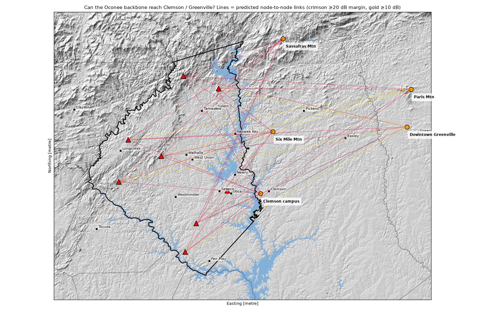

Where would a handful of Meshtastic nodes cover Oconee County, SC, and how well?
A physics-and-public-data estimate, made Sep 29, 2026. All coverage numbers are model estimates, not measurements.
~77% of county area with 5 nodes
~88% of residents with 5 nodes
47–99% area range depending on tree-loss assumption
~25 dB terrain margin toward Paris Mtn / Greenville
The short answer
The best single site is the Chauga Ridge cluster just west of Walhalla (Buzzard Roost Mtn ~34.7662, -83.1374, 527 m, with Poor Mtn and Rich Mtn right next to it scoring almost the same). It isn't the highest ground. It wins because it sits on the edge of the Blue Ridge escarpment and looks straight down over the Piedmont, where most people live. With a 10 m mast, one node there reaches an estimated ~41% of the county's area and ~55% of its people under the "realistic" assumptions below.
Five well-placed nodes get about 77% of the area and 88% of the population. Eight get about 85% and 91% (realistic case). After about 5 nodes, each extra node adds only a few percent. What's left uncovered is mostly deep coves and gorges: the Chattooga/Chauga valleys, the Jocassee gorges, and the NW corner.
The backbone isn't the problem. Every recommended node can reach every other node directly. The worst predicted node-to-node path loss is about 124 dB (5-node plan) or 132 dB (8-node plan), against a budget of about 151 dB after fade margin. The mesh has "diameter 1", so Meshtastic's default hop limit of 3 is plenty. The weak link is the last mile to a handheld under tree canopy.
Linking to Clemson and Greenville looks possible on terrain alone. Clemson is easy (about 102–111 dB). Paris Mountain (Greenville) comes in around 126 dB from Musterground Mtn or the Oakway-area water tower, and downtown Greenville around 127 dB from Persimmon or Burrells Mtn. That leaves roughly 25 dB of margin over bare terrain, but real trees along the paths will eat some of it.
Recommended sites (realistic scenario, greedy for area, each new node must link to the existing mesh)
#
Site (name from OpenStreetMap)
Lat, Lon
Ground (m)
Assumed antenna height
Cumulative area
Cumulative pop.
1
Buzzard Roost Mtn (Chauga Ridge, ~7.5 km W of Walhalla)
34.7662, -83.1374
527
10 m mast
40.7%
55.1%
2
Burrells Mtn (NW of Tamassee, near the NC line)
34.9673, -83.0757
915
10 m mast
54.8%
64.2%
3
Unnamed OSM water tower, ~5 km S of South Union (Oakway area)
34.6009, -83.0277
299
35 m (tank top)
65.9%
77.0%
4
Longnose Mtn (~9 km SW of Longcreek)
34.7001, -83.2640
533
10 m mast
73.1%
79.1%
5
Unnamed OSM water tower, ~1.5 km from Utica (Seneca east side)
34.6837, -82.9362
291
35 m
77.4%
88.2%
6
Smeltzer Mtn (~5.5 km from Salem)
34.9373, -82.9685
519
10 m mast
80.7%
89.5%
7
Long Creek Lookout Tower (fire tower)
34.8051, -83.2379
657
20 m
83.8%
90.0%
8
Hilltop near Chickasaw Point (automatic DEM pick)
34.5286, -83.0592
272
10 m mast
85.3%
91.4%
If you optimize for people instead of area, the first pick becomes the Seneca-area water tower (34.6956, -82.9825). On its own it reaches about 59% of residents but only 34% of the area. Eight population-optimized sites reach about 95% of residents and 82% of the area.
Good alternates (single-site realistic coverage): Poor Mtn or Rich Mtn (about 39–40%, same ridge as #1), Long Mountain Lookout Tower (34.8810, -83.0988; about 36%, a fire tower that could get an antenna above the trees), Stumphouse Mtn (about 33%), and Tamassee Knob (about 30%).
Surprising findings
The highest peaks aren't the best sites for handhelds. On pure line-of-sight, the 900 m+ peaks near the NC line win (Burrells Mtn sees about 30% of the county). Once realistic losses are included, the 527 m escarpment edge above Walhalla wins, because it faces the populated Piedmont instead of looking into the gorges.
Lakes are not automatically well covered. From ridge-top nodes, only about 55% of the county's lake surface has clear line-of-sight, versus about 61% of land, because the lakes sit at the bottoms of valleys. What water does give you is great paths along the water and no canopy on a boat. With no foliage penalty on the water, 5 nodes cover about 96% of Keowee and nearly all of the Oconee arms of Hartwell. Jocassee, deep in its gorge, gets only about 58%.
A dock node mostly covers its own reach of the lake. A 4 m node on the Jocassee shore has line-of-sight to 65% of the water within 8 km but only 10% of the land. On dendritic (branching) Keowee, the test dock saw only about 3% of the water by strict line-of-sight, though about 58% was reachable by diffraction. Lakeside nodes are great for boaters on that arm and poor for general coverage.
The assumptions matter more than the site choice. For the same 5 sites, estimated area coverage runs from 53% (strict terrain line-of-sight) to 77% (realistic) to 99% (open ground, no trees). See the scenario map and sensitivity table below.
The single best line-of-sight site is just over the state line: a communications tower site on Round Mountain, NC (~35.028, -83.038, 1,126 m), at about 34% of the county vs 30% for the best in-county site. It's a commercial tower, so treat it as a curiosity.
Method
Terrain: USGS 3DEP 1 arc-second DEM (bare earth), tiles n35w083, n35w084, n36w083 and n36w084 from the public prd-tnm S3 bucket. The tiles were mosaicked and resampled (averaged) to a 60 m UTM 17N grid. The Oconee County mask has 484,655 cells, about 1,745 km², matching the Census land + water area.
Boundary, population, water: Census TIGER/Line 2023 county boundary; 2020 Census blocks (TIGER tabblock20, POP20, total 78,607 people), with each block's population placed at its internal point; TIGER 2023 area-water for the lakes; TIGER places for labels.
Candidate sites (203 total, 183 inside the county, the rest within 1.5 km of the line):
102 from OSM (Overpass): 79 peaks, 5 fire/observation towers, 13 water towers, 5 communication towers.
101 automatic local high points (the highest cell within a 2.4 km window).
Assumed antenna heights: peaks 10 m, fire towers 20 m, water towers 35 m, comm towers 30 m.
Peaks were snapped to the highest DEM cell within about 200 m.
The recommended plan leaves out commercial comm towers and structures at the Oconee Nuclear Station site (the OSM "water tower" and "lookout" near Keowee Key), since a hobbyist realistically can't use them.
Propagation model: for every candidate × every county cell (a 1.5 m handheld receiver), the model computes:
free-space path loss at 906.875 MHz (the US LongFast default slot);
plus terrain diffraction loss using the Bullington equivalent-knife-edge method (ITU-R P.526);
earth curvature with k = 4/3 (effective earth radius 8,500 km);
a sample about every 60 m along each path.
This handles Fresnel-zone obstruction on a sliding scale rather than as yes/no. "Line-of-sight" in this report means diffraction loss ≤ 6 dB, i.e. the direct ray clears the terrain.
Link budget: Meshtastic docs list LongFast (SF11 / 250 kHz / CR 4/5) at a 153 dB link budget with 22 dBm and 0 dBi, which implies about -131 dBm sensitivity.
Optimistic: 10 dB fade margin, so path loss must be ≤ 147 dB.
Realistic ("forest"): 10 dB fade + 20 dB foliage/body/clutter at the handheld, so ≤ 127 dB (≤ 137 dB on open water).
Line-of-sight: terrain viewshed only.
Node ↔ node: 22 + 5 + 5 − 2 − (−131) = 161 dB, minus a 10 dB fade margin = 151 dB. I also checked a 141 dB "masts stuck in the canopy" case; every link in the plan passes both.
Site selection: greedy maximum coverage (area-weighted or population-weighted), plus a "connected" variant where each new site must link to one already chosen. Greedy isn't guaranteed optimal but is usually within a few percent of it for problems like this.
Sensitivity (the recommended plan, area % / population %)
Assumption for the handheld end
1 node
3 nodes
5 nodes
8 nodes
30 dB canopy/clutter (dense summer forest, in a hollow)
17/22
36/41
47/60
59/65
25 dB
28/42
52/64
64/78
74/82
20 dB (baseline "realistic")
41/55
66/77
77/88
85/91
20 dB but nodes at 30 dBm (1 W, near the legal ERP limit)
64/78
84/92
92/99
96/100
10 dB (open fields, winter, handheld held high)
70/83
88/95
94/99
97/100
Caveats (please read)
Trees are the big unknown. The DEM is bare earth. Upstate SC is heavily forested with 20–30 m canopy, and 915 MHz loses a lot through wet leaves. A single flat "20 dB" penalty is a crude stand-in; real coverage will be patchy, worse in summer and better in winter.
A 10 m mast on a forested summit may still be inside the canopy. Fire towers and water towers get above it, which is why they score well.
Access and permission: most of these summits are in Sumter National Forest, on state land, or private. Water towers belong to utilities, and fire towers to the state or USFS. None of these sites should be assumed available; check ownership and permits first.
Candidate data: OSM tower tags are incomplete and some water-tower points may be wrong or gone. Water-tower heights (35 m) and mast heights are assumptions.
Model limits:
The 60 m grid smooths sharp ridges.
Bullington tends to be optimistic on multi-ridge paths and ignores buildings, ground reflections (two-ray fading over the lakes), interference and noise-floor variation.
Meshtastic is also limited by airtime and collisions, not just link budget. A dense mesh where every router hears every other router can congest.
Handheld uplink: assumed symmetric (a 22 dBm handheld). Many handhelds have worse antennas than "0 dBi". A pocket or body can cost another 5–15 dB.
Legal: US 902–928 MHz, +30 dBm ERP max per Meshtastic's docs. 22 dBm + 5 dBi stays well inside that.
Ideas for next steps
Add a canopy model: subtract 3DEP bare earth from a surface model (Copernicus GLO-30 DSM, or USGS lidar where available) to get tree height, then add per-cell foliage loss (e.g., ITU-R P.833 / P.2108) instead of a flat 20 dB.
Ground-truth it: drive or hike with a handheld logging RSSI/SNR (Meshtastic range-test module) from one temporary node near Walhalla, then calibrate the "clutter" number.
Check the public Meshtastic map for existing nodes around Clemson and Greenville; a Paris Mountain or Clemson router would make a regional mesh.
Try a MediumFast preset (148 dB budget, about 3× faster) to see how much coverage you give up for less congestion.
Run a proper optimizer (integer programming) and add practical constraints such as power, road access and permission likelihood.
Maps

Five-node plan, realistic (20 dB clutter) scenario, with backbone links.

Three-node plan.

Eight-node plan.

Diminishing returns after about 5 nodes.

Line-of-sight vs realistic vs open ground: 53% / 77% / 99% area.

Predicted RSSI from the best single site.

Links toward Clemson, Paris Mountain and Greenville.